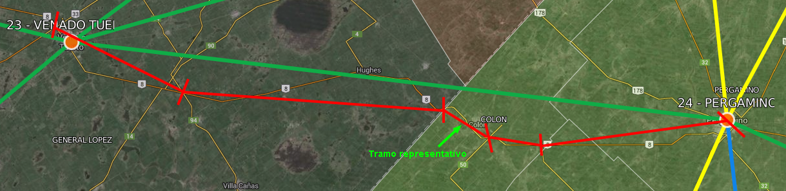
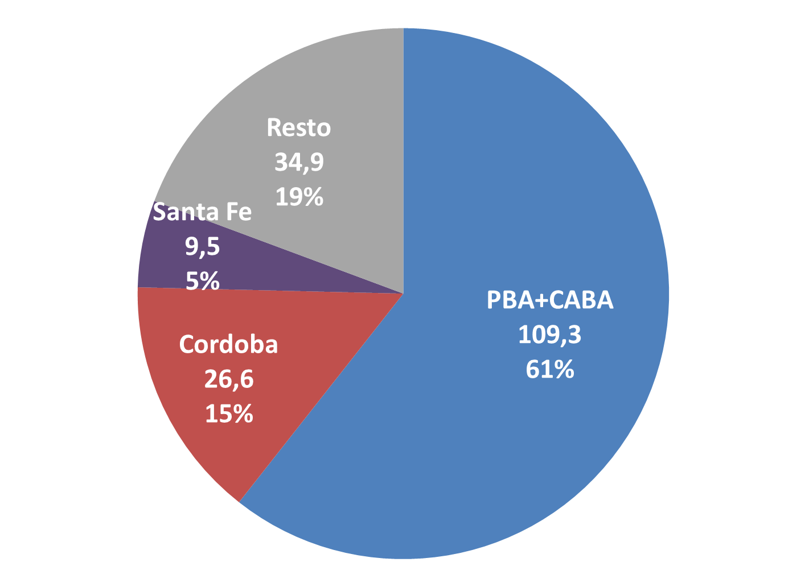

Luego de estimar una matriz origen-destino es conveniente controlar el resultado obtenido. Ello se realiza mediante la comparación de los flujos de transporte relevados con datos de conteos de tránsito. Esto permite determinar si existen tráficos faltantes en la matriz origen-destino construida.
Como se verá más adelante, este control muestra que existe un conjunto no relevado de flujos de bienes cuyo transporte no pudo ser determinado debido a la carencia de datos.
Desafortunadamente no hay una forma de resolver satisfactoriamente este problema. En esta sección se presentará una posible solución para dar cuenta de los pares origen-destino omitidos (y sus tonelajes) a partir de los datos de tránsito disponibles y su comparación con la matriz OD representada anteriormente.
Para esto se realiza una estimación de las cargas pasantes por cada tramo del modelo de la red vial de cargas para la Argentina.
Cómo interpretar datos de tráfico
Generalmente los datos de tráfico se expresan en una unidad de medida conocida como Tránsito Medio Diario Anual (TMDA). Esto es, la cantidad de unidades automotores que circulan por día en promedio por un tramo vial tomando los datos de un año entero.
Por ejemplo, según datos de la Dirección Nacional de Vialidad (DNV) en promedio pasan 4.522 unidades automotores por día en el recorrido nacional número 8 entre la salida de Arrecifes y la entrada a Pergamino.
Este dato sin embargo aún no es de utilidad para un estudio de cargas en tanto no se conozca la composición de esas 4.522 unidades automotores. Si todas fueran autos, significaría que por ese tramo no circulan cargas y por lo tanto está “vacío” a los efectos de este estudio.
La DNV informa que en ese tramo la proporción de autos que pasan es de 72,3%, la de ómnibus es de 3,5%, la de camiones con acoplado es de 6,4%, la de camiones sin acoplado es de 5,3% y la de semirremolques es de 12,5%. Esto significa que por ese tramo pasan en promedio 289 camiones con acoplado, 240 sin acoplado y 688 con semirremolques. Los autos y los ómnibus no transportan carga y por lo tanto no son de interés para el estudio.
Un camión con acoplado o semirremolque carga cerca de 30 toneladas de granel (la unidad de medida de las “toneladas equivalentes”, según se mencionó anteriormente), mientras que un camión sin acoplado sólo carga hasta 8 toneladas. Además de esto, hay que tener en cuenta que por lo general el camión va cargado y vuelve vacío, de manera que se cuenta la mitad de su capacidad de carga para transformar unidades de camiones pasantes por un tramo en toneladas equivalentes pasantes por el mismo[1].
Esto quiere decir que por el tramo “Arrecifes-Pergamino” pasan 4.341 toneladas equivalentes por día en promedio transportadas por camiones con acoplado, 959 por camiones sin acoplado y 8.479 por semirremolques. En total son 13.779 toneladas equivalentes por día o 5.029.164 por año.
La fórmula general para calcular las toneladas pasantes anuales para un tramo a partir de su TMDA y la composición del tráfico es entonces:
donde
La red vial interurbana de la Argentina se divide en tres grandes grupos de acuerdo a su jurisdicción: (a) red bajo jurisdicción nacional (a cargo de la Dirección Nacional de Vialidad); (b) red bajo jurisdicción de las provincias (a cargo de las Direcciones Provinciales de Vialidad), y (c) red bajo jurisdicción municipal o comunal.
A los fines de este trabajo haremos referencia únicamente a las vías pavimentadas que son las que conducen el grueso del tráfico de cargas.
Si bien la información disponible para las redes provinciales pavimentadas es escasa y fragmentaria, las evidencias indican que la mayor parte del tráfico tanto de cargas como de pasajeros circula por la red nacional. La red vial nacional tiene una extensión de 39.518 kilómetros de los cuales 35.214 son pavimentados
Para el año 2010, el de referencia de este estudio, la DNV ofrece datos de TMDA para 133 rutas que se subdividen en 1.324 tramos
Todos los tramos de la red nacional tienen una estimación de tránsito medio anual (TMDA); pero sólo algunos de ellos tienen además una estimación anual media de la composición del tráfico (diferenciando las TMDA en autos, camionetas, buses, camiones con acoplado, camiones sin acoplado y semirremolques). Otros tramos tienen, en cambio, estimaciones parciales no representativas de un año completo.
De todas maneras, más de la mitad de la red vial (en extensión) no cuenta con información alguna sobre clasificación de vehículos.
Tabla 19: Nivel de cobertura de los datos de composición de tráfico para la red vial nacional, respecto del total de tramos según la clasificación de la DNV
| 133 rutas | 1324 tramos |
175 tramos
(estimaciones anuales) |
8.081 km
(20%) |
|
334 tramos
(estimaciones parciales) |
10.185 km
(26%) |
||
|
815
(sin estimaciones) |
21.637 km
(54%) |
Hay 47 rutas que no tienen ninguna estimación de composición del tráfico pero 42 de ellas soportan tráfico principalmente urbano y por lo tanto no son de interés para este estudio
Tabla 20: Nivel de cobertura de los datos de composición de tráfico para la red vial nacional, respecto del total de rutas nacionales
| 133 rutas |
65 rutas
(al menos un tramo con estimación anual) |
34.411 km
(86%) |
|
|
21
(al menos un tramo con estimación parcial) |
2.104
(5%) |
||
|
47
(sin estimaciones) |
42
(principalmente tráfico urbano) |
2.749 km
(7%) |
|
|
5
(tráfico interurbano) |
639 km
(2%) |
||
En el caso de tramos para los que no se cuenta con información acerca de la composición del tránsito, y que se encuentran entre tramos donde tal información sí existe, ésta puede estimarse mediante una interpolación lineal entre los datos del último tramo de la ruta con información y los del próximo en tenerla. De manera tal que a partir de las rutas que tengan datos de composición del tráfico en algunos de sus tramos, pueden estimarse para aquellas partes intermedias de la ruta que no los tienen.
A partir de esta base de datos, se procedió a asociar cada tramo de la DNV a un tramo del modelo de la red vial. En el ejemplo siguiente se muestran los 5 tramos-DNV de la ruta 8 que fueron asociados al tramo 23-24 (Venado Tuerto – Pergamino) del modelo.
Figura 36: Asociación de tramos de rutas reales a un tramo del modelo
El siguiente paso es elegir cuál es el tramo cuyo tráfico es más representativo del movimiento de cargas entre las Zonas de Tráfico del modelo que se intenta capturar. De entre los tramos de la DNV que pudieron ser asignados y que cuentan con datos de tráfico y composición del mismo, se desprende que hay una media de 3,76 tramos de la DNV por tramo del modelo. La dispersión es además bastante alta: el máximo de “tramos-DNV” por “tramo-modelo” es de 11 y el mínimo de 1.
El criterio general para este caso es elegir el tramo-DNV de menor tránsito como el más representativo del tránsito interzonal relevante para el estudio (ie, del tráfico de cargas del tramo correspondiente en el modelo). Esto responde al hecho de que en proximidad de los centros urbanos, el tráfico registrado es mayor debido a transportes de corta distancia, que no son de interés para este trabajo.
Existen también casos donde esta regla opera en un sentido inadecuado. Esto es así cuando el tránsito se reduce drásticamente en el tramo más próximo al centro urbano debido a la existencia de rutas de circunvalación u otro tipo de recorridos alternativos. En estos casos se tomó el tramo de menor tránsito excluyendo los tramos más cercanos a los centros urbanos.
Cabe aclarar que un tramo del modelo puede estar representando el tránsito de 2 rutas nacionales simultáneamente. De todas formas, de los 179 tramos del modelo que pudieron ser asociados a alguna ruta nacional, sólo 7 tienen 2 rutas nacionales asociadas. El resto de ellos está asociado a una sola ruta nacional.
El siguiente mapa representa el modelo de la red vial cargado con el tránsito que surge de los datos de la DNV. Debe advertirse que el mismo no está completo. Hay dos tipos de tramos faltantes: (a) aquéllos que tienen una ruta nacional pero no hay suficientes datos para estimar las cargas pasantes y (b) aquéllos que no tienen ruta nacional (dependen de rutas provinciales).
Figura 37: Flujos de transporte sobre la red vial nacional a partir de datos de tránsito de la DNV
Existen 43.550 km de rutas provinciales pavimentadas, de los cuales 10.657 (un cuarto del total) pertenecen a la provincia de Buenos Aires
Esto plantea inconvenientes ya que algunos tramos fuera de la provincia de Buenos Aires representan tránsito entre zonas que utiliza alguna ruta provincial importante. Sin embargo el tránsito de la red vial provincial de Buenos Aires (que es en donde más relevancia tienen las rutas provinciales) pudo ser estimado siguiendo el mismo método que en el caso de las rutas nacionales. Los resultados son presentados en la figura siguiente.
Figura 38: Flujos de transporte sobre la red vial provincial de la provincia de Buenos Aires a partir de datos de tránsito
Existen varios tramos faltantes que no tenían datos o, si los tenían, no eran del todo confiables (porque eran muy antiguos -2003- o porque eran inconsistentes con los datos de otras rutas).
Incorporando los datos de la red vial provincial de Buenos Aires a los de la DNV, nos quedaría un mapa de tráficos de la red vial “real” como el que sigue a continuación.
Figura 39: Flujos de transporte sobre la red vial nacional y la red vial provincial de la provincia de Buenos Aires a partir de datos de tránsito
Disponiendo entonces del resultado de la asignación de tráficos del modelo por un lado y de la estimación de tráficos con base en los datos de la DNV y la Provincia de Buenos Aires por otro, se puede contrastar el resultado del modelo y detectar sus desviaciones respecto de la estimación de los flujos reales de tráfico basada en los datos de las direcciones de vialidad nacional y provincial.
En el siguiente mapa el grosor de los tramos indica la magnitud de la desviación del modelo respecto de los flujos de tráfico estimados. El color verde indica que, desde el punto de vista del modelo, el tramo debería “crecer” ya que los flujos estimados de tráfico son mayores que los representados por el modelo. El color rojo indica los casos en los que el modelo asignó a un tramo mayor tráfico del que sugieren las estimaciones basadas en los datos de tránsito.
Figura 40: Discrepancias entre los flujos de tránsito relevados y los estimados a partir de datos de tránsito (DNV+PBA)
En la mayoría de los casos el mapa indica tráficos faltantes en el modelo (verde), lo que es consistente con el hecho de que no se dispone de datos suficientes de todos los sectores productivos que originan tráfico de cargas para estimar su matriz origen-destino.
Suponiendo que la asignación de recorridos para cada par OD en el modelo fue correcta en la mayoría de los casos, estos tramos con tráfico faltante origen-destino indican el tráfico de cargas no relevadas, que no fueron incluidos en el modelo.
Proponemos aquí una metodología para estimar la configuración de estos tráficos no relevados, a efectos de obtener alguna noción acerca de su magnitud y localización.
En principio, hay innumerables combinaciones posibles de pares OD que podrían cubrir este tráfico faltante detectado. Destacamos dos opciones, que en cierta medida son extremas, en términos de la distancia media de transporte
Optamos aquí por una tercera opción intermedia; ella consiste en obtener una matriz OD que arroje como distancia el promedio entre las distancias medias mínima y máxima posibles. Esto es, se obtendrán las distancias medias de transporte conforme a lo indicado en a) y b), se obtendrá el promedio entre ellas, y mediante un algoritmo similar al empleado para b), se estimará la matriz OD de tráficos no relevados.
El algoritmo para el cálculo detallado en b) consiste en un ejercicio de optimización de las siguientes características:
Elegir los “pares OD implícitos” que maximicen la distancia media implicaría asumir que las cargas no determinadas en el modelo se desplazan lo más lejos posible de su zona de origen, cumpliendo con las restricciones de tráfico faltante por tramo.
Así, la matriz de “pares OD implícitos” que surge de contrastar el modelo construido con los datos de vialidad, depende de la elección de una distancia media que se ubique entre un mínimo y un máximo posibles, dadas las restricciones del problema de optimización.
El criterio elegido, como se mencionó, en este caso fue el de adoptar el promedio entre las distancias medias mínima y máxima posibles.
Se repitió entonces el ejercicio de optimización buscando la configuración de pares OD que arrojara esta distancia media y se incorporó al modelo como una matriz origen-destino de “cargas no relevadas” o implícitas
Tabla 21: Principales parámetros de matrices origen-destino posibles para los “pares OD implícitos”
| Distancia media | Toneladas equivalentes | Toneladas-kilómetro | Distancia media |
|---|---|---|---|
| unidades | milllones | km | |
| Mínima | 369.150.159 | 41.898 | 113 |
| Promedio | 180.371.625 | 41.898 | 232 |
| Máxima | 119.354.880 | 41.898 | 351 |
Este ejercicio debe ser entendido sólo como una aproximación tentativa y provisoria a los pares OD que faltan en el modelo, a los fines de adquirir una visión lo más completa posible de la configuración de la red vial de transporte. Para un resultado más preciso deberán encararse estudios más profundos, incluyendo una encuesta nacional de cargas de gran alcance.
Una vez calculados los “pares OD implícitos” se puede analizar cuál es la cobertura de la matriz origen-destino estimada respecto del total de tráfico que circula por el país, según las estimaciones realizadas en base a datos de conteo de tránsito.
La distancia media de la matriz OD de cargas no relevadas es sustancialmente menor que la de las cargas relevadas: 232 km vs 370 km. Esto provoca que la inclusión de los pares OD implícitos en la matriz OD redunde en una baja de la distancia media total hasta los 309 km. Esto permite inferir que la carga omitida es probablemente carga que recorre cortas distancias.
Tabla 22: Comparación de los resultados generales del modelo con la estimación de tráficos reales totales
| Modelo | Toneladas equivalentes | Toneladas-kilómetro | Distancia media |
|---|---|---|---|
| unidades | milllones | km | |
| Cargas relevadas | 228.541.917 | 84.625 | 370 |
| Cargas no relevadas | 180.371.625 | 41.898 | 232 |
| Total | 408.913.542 | 126.523 | 309 |
A partir de esta tabla se puede calcular el nivel de cobertura de los flujos de transporte totales alcanzado por la matriz OD de cargas relevadas:
El resto constituye nuestra “medida de lo desconocido”: aquél tráfico que según los datos de tránsito estimamos que circula por la red vial del país, pero que no ha podido ser relevado a partir de datos de producción, consumo y comercio de productos identificados.
Cabe recordar que los datos de tránsito utilizados para esta estimación no son completos. Únicamente se cuenta con información del tránsito pasante por la red vial nacional y por la red vial provincial de la Provincia de Buenos Aires. En esta estimación, por lo tanto, no se tuvieron en cuenta los tráficos no relevados que pudiera haber en las rutas provinciales aparte de la Provincia de Buenos Aires. Sin embargo, en general se presume que el tráfico circulante por estas rutas es mucho menor que el soportado por las rutas nacionales.
El tonelaje originado por los “pares OD implícitos” es entonces, de alguna manera, una estimación de aquellas cargas que todavía falta encontrar en la red vial de transporte argentina para dar mayor confiabilidad al análisis.
Figura 41: Toneladas de “pares OD implícitos”, por origen provincial (millones de toneladas equivalentes)
Como ya lo sugería el mapa de la sección anterior, donde se mostraban las discrepancias entre los datos de tráfico y la red generada por el modelo, entre la provincia y la ciudad de Buenos Aires está más del 60% de las toneladas no relevadas estimadas. Si añadimos a Córdoba y Santa Fe, estas 3 provincias más la ciudad de Buenos Aires reúnen a más del 80% de las toneladas implícitas estimadas en este modelo.
Futuras investigaciones deberían profundizar el estudio de la carga que se origina en estos distritos, especialmente en Buenos Aires, cuestión nada fácil teniendo en cuenta que la alta densidad poblacional genera una multiplicidad de tráficos difíciles de discriminar.